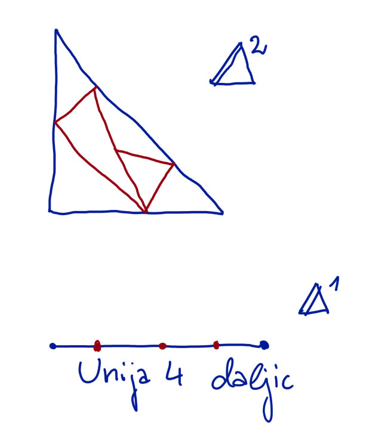
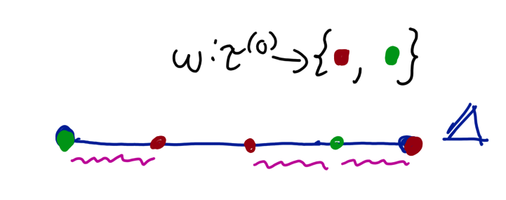
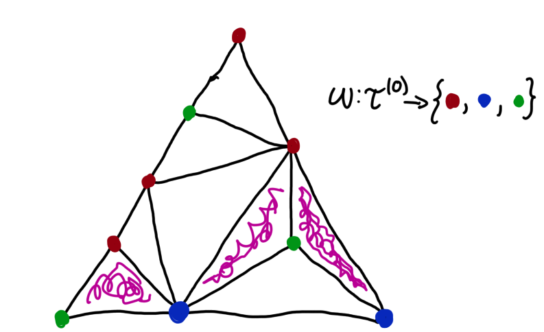

Spernerjeva lema
Uvod in definicije
Simpleks je n-dimenzionalni trikotnik. Standardni simpleks označimo z
\[
\Delta^n = \left\{(x_1,\ldots,x_n) \in [0,1]^n \mid \sum_j x_j\leq 1\right\}
\]
Podobno lahko opišemo poljubni \(n\)-simpleks kot konveksna kombinacija \(n\) spremenljivk. Triangulacija simpleksa je razdelitev simpleksa na manjše simplekse. Pogoj je, da je vsak element triangulacije simpleks iste dimenzije ter, da je njihova unija celoten simpleks (torej triangulacija je pokritje s simpleksi).

Simpleks generiran z oglišči \(x_0,\ldots x_n\) označimo kot \([x_0,\ldots, x_n]\). Opazimo, da ima \(n\) simpleks \(n+1\) oglišč (primer: 1d premica ima 2 oglišča, podobno trikotnik)
Obratno, iz simpleksa \(\sigma\) dobimo njegova oglišča z \(\sigma^{(0)}\) (ker so to 0 dimenzionalna lica).
Z \([n]\) bomo označili \(\{0,1,\ldots, n-1\}\).
Spernerjeva lema nam pove kaj se zgodi ob barvanju oglišč triangulacije simpleksa.
Trditev: Spernerjeva lema
Dana je triangulacija \(\tau = \{\tau_a \mid a\in \Lambda\}\) \(n\)-simpleksa \(\sigma = [x_0, \ldots, x_n]\).
Naj bo \(\omega: \tau^{(0)}\to [n+1]\) funkcija barvanja. Torej vsakemu oglišču priredi eno izmed n+1 barv, predstavljeno s števili (npr. za trikotnik \(\Delta^2\) je \(n=2\) in oglišča slika v 3 barve, npr RGB). Tej funkciji dodamo 2 zahtevi:
- Oglišča \(\sigma\) skupaj zavzamejo vsako barvo in to natanko enkrat. \(\omega: \sigma^{(0)} \subseteq \tau^{(0)}\to [n+1]\) je bijekcija
- Če je \(y\in\tau^{(0)}\) vsebovana v \([x_{j_1},\ldots,x_{j_k}]\) (\(k\)-dimenzionalno lice \(\sigma\), npr trikotnik ali stranica ali oglišče piramide v 3d), potem je \(\omega(y)\in \{\omega(x_{j_1})),\ldots,\omega(x_{j_k})\}\). Torej če ima \(k\)-dimenzionalno lice \(\sigma\) oglišča pobaravana z nekimi barvami so tudi vsa oglišča triangulacije pobarvana z istimi barvami (in podobno rekurzivno lica lic).
Potem bo v triangulaciji liho mnogo simpleksov z vsemi barvami na ogliščih, tj. simplekov \(\tau_a\) za katere \(\omega\left(\tau_a^{(0)}\right)=[n+1]\), slika oglišč so vse barve.
Primer 1d

Primer 2d

Dokaz: Spernerjeva lema
BŠS barvanje je \(\omega(x_i)=i\) za \(i\in [n+1]\). Dokaz bo potekal po indukciji na dimenzijo simpleksa \(\sigma\).
Primer \(n=1\):
to je daljica \([x_0, x_1]\) z dvema barvama. Izberemo delne točke \(\tau_i\) na premici \(x=\tau_0, \tau_1,\ldots,\tau_k = x_1\). BŠS so točke navedene po vrsti kot si sledijo od \(x_0\) do \(x_1\). Ker je \(\omega(x_0)=0\) in \(\omega(x_1)=1\), obstaja najmanjši \(j\), da \(\omega(\tau_j)=0\) in \(\omega(\tau_{j+1})=1\) (tukaj zamenja barvo torej ima daljica obe barvi za oglišča). Če se za \(\tau_{j+1}\) pojavi še neka točka \(k>j+1\lvert\tau_k\), da \(\omega(\tau_k\)=0\) (kar je torej še ena daljica z obema barvama, torej sodo število daljic z obema barvama do tukaj), potem uporabimo isti argument kot prej, da pokažemo, da nujno sledi še nek \(j'>k\), kjer preide iz 0 na 1. Torej je daljic z obema barvama liho (analogija: Glej prehode x osi z funkcijo, ki je najprej negativna in potem pozitivna).
Primer \(n=2\):
(ni potreben, samo za demonstracijo) imamo 3 barve 1,2,3. S \(Q\) označimo število celic pobarvanih z \((1,1,2)\) ali \((1,2,2)\) (vrstni red ni pomemben). Z \(R\) označimo število celic pobarvanih z vsemi barvami, \((1,2,3)\). Z \(X\) označimo število daljic na robu velikega simpleksa pobarvanih z \((1,2)\) in z \(Y\) označimo število daljic v notranjosti simpleksa (triangulaciji in ne na robu), pobarvanih z \((1,2)\).
Vsak trikotnik v \(Q\) prispeva 2 robova \((1,2)\), vsak trikotnik v \(R\) pa prispeva natanko enega. Na ta način štejemo stranice v notranjosti dvakrat (enkrat za vsak trikotnik, ki naredi daljico; daljice imajo nekako dve strani), stranice na robu simpleksa pa le enkrat. Sledi, da \(2Q+R = X + 2Y\).
Ampak \(X\) je lih! To sledi iz tega, da ima veliki simpleks 3 stranice. Ena je pobarvana z barvami \((1,2)\) (kar vemo po indukciji za \(n=1\), da ima liho mnogo daljic z barvo \((1,2)\)), drugi dve pa z \((2,3)\) in \((1,3)\) (ki pa imata 0 daljic oblike \((1,2)\)). Ker je \(X\) lih, \(2Q, 2Y\) pa soda sledi, da je \(R\) tudi lih.
Primer \(n\implies n+1\):
Imamo triangulacijo \(\tau\) za \(\sigma\) z \(n+1\) barvami. Naj bo \(R\) število podsimpleksov z \(n+1\) barvami. Naj bo \(Q\) število podsimpleksov, ki uporabijo vse barve razen \(n+1\) (torej le \(1,\ldots,n\)); ena barva se torej pojavi dvakrat v teh simpleksih. Gledamo še \(n-1\) dimenzionalne simplekse, ki uporabijo barve \(\{1,\ldots,n\}\), tukaj označimo \(X\) simplekse na robu \(\sigma\) in \(Y\) simplekse v notranjosti.
Spet dobimo enačbo \(2Q+R=X+2Y\). Celice iz \(Q\) namreč prinesejo natanko 2 lica z barvami \(1,\ldots,n\), lica v notranjosti se pa podvojijo (in tako \(2Y\)).
Na robu \(\sigma\) imamo natanko en \(n-1\) dimenzionalni simpleks, ki uporabi primerne barve (torej \(1,\ldots, n\)). Ostali tako gotovo nimajo nobenega simpleksa z barvami \(1,\ldots,n\) po definiciji barvanja. Po indukciji pa vemo, da ima ta simpleks liho mnogo podsimpleksov z vsemi barvami. Torej je \(X\) lih. Ker so ostala števila soda je tudi \(R\) lih, kar zaključi dokaz.
Sfera ni retrakt krogle
Standardni simpleks je homeomorfen sferi.
Definicije
Retrakt je preslikava \(f:\Delta^n\to\partial\Delta^n\), ki \(f(\partial \Delta^n) = \partial \Delta^n\).
Dokaz
S protislovjem: predpostavimo, da obstaja retrakcija \(r:\Delta^n\to\partial\Delta^n\) in \(\Delta^n = [e_1,\ldots, e_{n+1}]\). Rob simpleksa je unija njegovih \(n-1\) dimenzionalnih lic.
Naredili bomo triangulacijo tako, da razrežemo simpleks na ekvidistančne vzporedne ravnine. Torej za \(p\in \mathbb N\) razrežemo \(\Delta^n\) z
\[
A_{j,q} = \left\{\sum_{i=1}^{n+1} t_ie_1\mid t_j = \frac{q}{p}, \sum_{i=1}^{n+1}t_i = 1 \right\}, j=1,\ldots n+1; q=1,\ldots, p-1
\]
Tukaj \(t_j\) fiksira ravnino po eni dimenziji (po ostalih dimenzijah se prosto premikamo po simpleksu). To določa triangulacijo \(\tau\) simpleksa \(\Delta^n\).
Določimo barvanje \(\omega\): \(\omega(e_i)=i-1\in[n+1]\) za robne točke. Ostala oglišča v triangulaciji pobarvamo z enako barvo kot najbližje oglišče \(e_i\) po retrakciji (torej \(x_i\) je iste barve kot najbližja barva \(r(x_i)\)). Če jih je več enako oddaljenih izberemo poljubno barvo. Tako barvanje ustreza spernerjevi lemi (točke standardnega simpleksa so pobarvane različno po definiciji, prav tako bo vedno najbližja točka na istem licu. Polni dokaz je v uradnem pdf za zdaj...).
Iz sprenerjeve leme sledi, da so oglišča vsaj enega simpleksa \(\rho = [x_0,\ldots, x_n]\) pobarvana z vsemi barvami \([n+1]\). Diameter tega simpleksa lahko navzdol omejimo z \(1/n\) (spet v pdf).
Retrakt \(r\) pa je zvezna preslikava na kompaktu \(\Delta^n\) in torej enakomerno zvezna. Torej obstaja \(\varepsilon>0\), da se točki ki sta oddaljena za \(\varepsilon\) (ali manj) preslikata v točki oddaljeni \(1/n\) (ali manj). Izberemo \(p\) tako velik, da je diameter poljubnega simpleksa v \(\tau\) manjši od \(\varepsilon\). Potem sta oglišči \(x_0\) in \(x_j\) simpleksa \(\rho\) oddaljeni manj kot \(\varepsilon\) in vendar pa sta \(r(x_0), r(x_j)\) oddaljeni za več kot \(1/n\) kar je v protislovju z enakomerno zveznostjo.